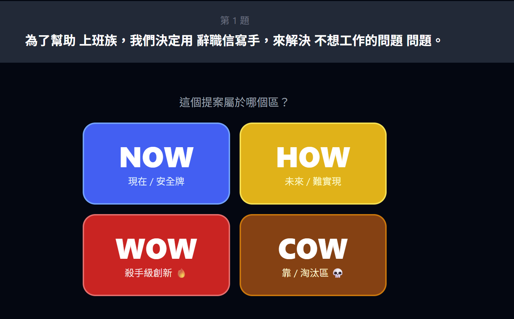
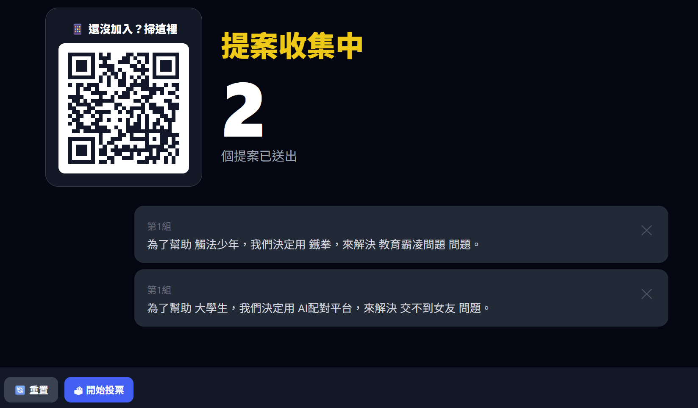
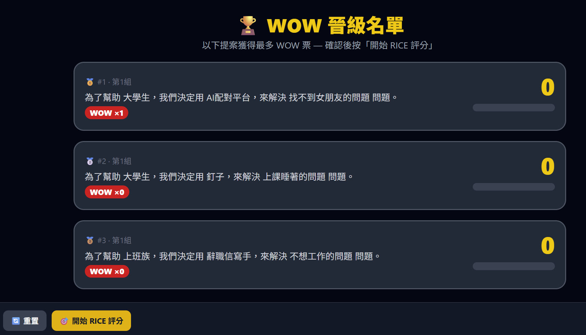
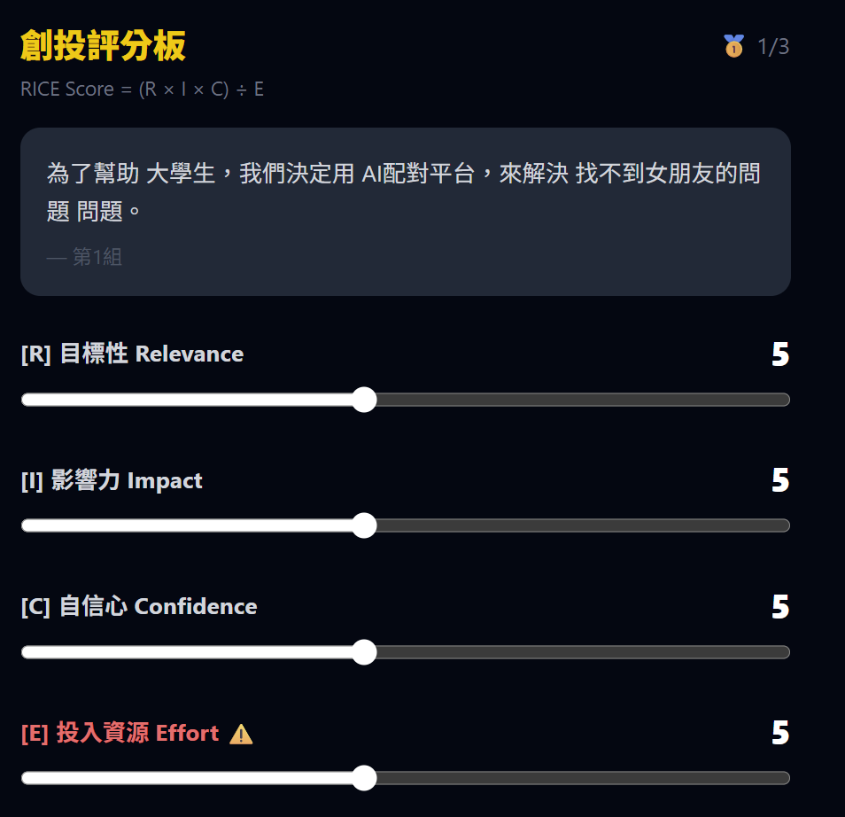
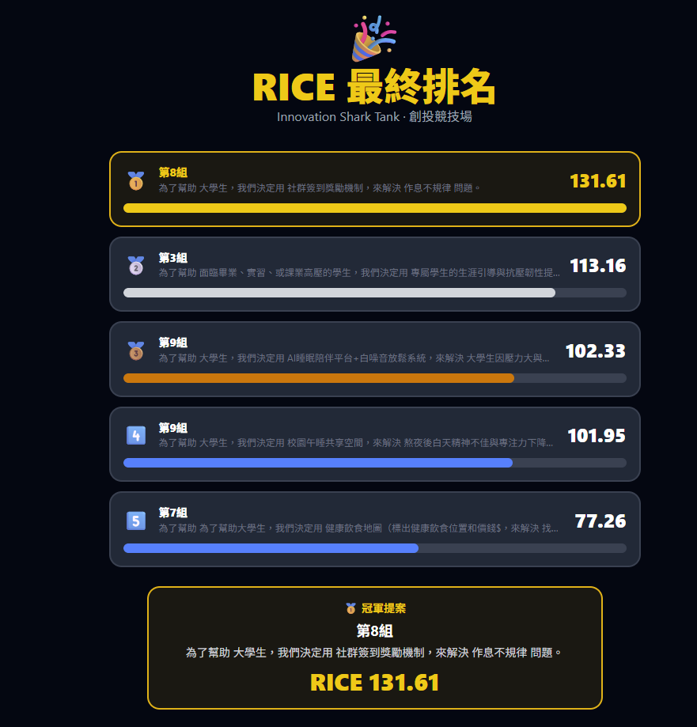

作品 · 教學遊戲
WOWCOW 決策矩陣
2026.05 · 個人專案

FIG. 45 — 產品主畫面
關於這個作品
WOWCOW 決策矩陣是一個課堂創新提案競技場。學生掃碼加入並提交構想，全班依 NOW、HOW、WOW、COW 四種價值判斷投票；獲得最多 WOW 票的提案晉級，再進入限時 RICE 評分。
教師端掌控提案、投票、晉級與結果揭露流程，最後以排行榜呈現各組構想如何從發散走向可執行的優先順序。
作品亮點
學生掃 QR Code 加入並提交小組提案
NOW／HOW／WOW／COW 四象限投票篩選
晉級提案進行限時 RICE 評分
教師控台與動態排行榜呈現決策過程
操作畫面



